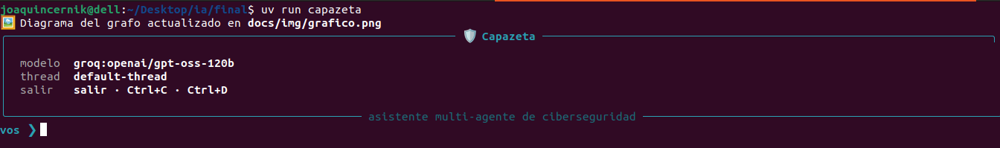
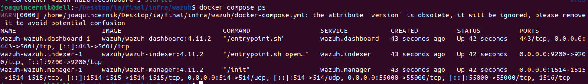

Capazeta
Asistente multi-agente de ciberseguridad que enruta cada consulta a un especialista en redes, SOC o threat intelligence, con recuperación semántica sobre MITRE ATT&CK.
Asistente multi-agente de ciberseguridad que enruta cada consulta a un especialista en redes, SOC o threat intelligence, con recuperación semántica sobre MITRE ATT&CK.
Demostración del flujo completo implementado en el Notebook 05: Demo Trabajo Final, cubriendo la configuración del entorno, enrutamiento automático hacia subagentes especializados, ejecución segura de herramientas (allowlist), y consulta directa al RAG sobre MITRE ATT&CK en las tres verticales operativas.
Iniciamos el asistente con uv run capazeta, verificamos la conectividad con el SIEM (Wazuh) y confirmamos los agentes activos en el sistema:

Inicio del CLI interactivo de Capazeta con interfaz Rich.

Servicios del SOC (Wazuh Manager/Indexer) levantados y operativos.

Agente de monitoreo Linux reportando telemetría en tiempo real.

Verificación en CLI: Prompt> ¿qué agentes hay reportando a wazuh en este momento?
El nodo central router analiza la intención de la consulta en lenguaje natural y la canaliza dinámicamente hacia el subagente especialista sin invocar herramientas innecesarias.

Grafo LangGraph: Router central, subagentes por dominio y nodos de herramientas.
infraestructura_redesPrompt: "¿Cuáles son las mejores prácticas teóricas para segmentar una red corporativa utilizando VLANs sin realizar escaneos activos?"

threat_intelPrompt: "¿Cuáles son las mejores prácticas teóricas para segmentar una red corporativa utilizando VLANs sin realizar escaneos activos?. Sé muy breve"

soc_logsPrompt: "¿Qué diferencias operativas existen entre centralizar logs mediante Syslog rsyslog vs un agente liviano como Wazuh Agent?"

Demostración de ejecución de escaneo de red utilizando infra_tools bajo la lista blanca de argumentos (allowlist) de Nmap para prevenir inyecciones de código o parámetros no autorizados por parte del LLM.
Prompt: "Realiza un escaneo de red rápido con nmap sobre 192.168.0.0/24 para identificar hosts activos y puertos abiertos principales. Guarda el resultado en un reporte en formato Markdown y en pdf dentro de la carpeta reports."

Escaneo Nmap ejecutado de forma segura aplicando la allowlist de parámetros.
Reportes consolidados generados en disco en formatos Markdown y PDF:


infraestructura_redes)Caso de Uso: Evaluación de exposición de servicios y correlación de mitigaciones según la matriz MITRE ATT&CK.
Prompt: "Dirígete al agente infraestructura_redes. Ejecuta un escaneo sobre el host objetivo 192.168.0.26 utilizando infra_tools. Una vez identificados los puertos y servicios expuestos, consulta en el RAG la técnica MITRE relacionada con el descubrimiento de servicios de red (Network Service Discovery)."

router interceptó la solicitud y la derivó directamente al agente especialista infraestructura_redes.infra_tools invocando nmap de forma segura (aplicando la allowlist de parámetros) sobre la IP 192.168.0.26 para auditar los puertos activos.Se esperaba que el agente aislara el flujo en la vertical de red, ejecutara un escaneo válido sobre el host objetivo, identificara la técnica exacta de MITRE asociada al escaneo de servicios (T1046) y presentara una propuesta de mitigación orientada a infraestructura.
nmap evitó que el LLM introdujera flags no permitidos o peligrosos durante el escaneo.T1046 (Network Service Discovery), superando la limitación de coincidencias textuales rígidas.threat_intel)Caso de Uso: Caracterización de persistencia y evasión ante la detección de scripts o unidades de servicio sospechosas.
Prompt: "Dirígete al agente threat_intel. Analiza el evento donde se detectó la creación de un nuevo servicio en /etc/systemd/system/ seguido de la eliminación de archivos temporales en /tmp/. Utiliza el RAG sobre la base de datos de MITRE ATT&CK para identificar las técnicas y subtécnicas correspondientes a la creación de servicios en Linux y la eliminación de evidencia. Genera un informe de Threat Intelligence en Markdown que detalle el comportamiento del atacante y sugiera reglas de detección para implementar en Wazuh."

router delegó la orden al subgrafo especialista threat_intel.T1543.002 (Systemd Service)./tmp/ → T1070.004 (File Deletion).Se esperaba que el agente mapeara correctamente ambas acciones del atacante a sus respectivas técnicas y subtécnicas de Linux dentro del marco MITRE ATT&CK, redactando un reporte formal de inteligencia con reglas de detección accionables sin requerir escaneos de red.
/etc/systemd/system/) y su abstracción dentro del framework (T1543.002), así como la acción sobre /tmp/ con la evasión de defensas (T1070.004).soc_logs)Caso de Uso: Enriquecimiento de alertas de Wazuh en tiempo real e identificación de patrones de escalada de privilegios.
Prompt: "Dirígete al agente soc_logs. Examina los registros de alertas recientes cargados por Wazuh en relación con el agente Linux ubuntuLocal. Se observan múltiples fallos de autenticación en auth.log seguidos por una modificación en /etc/sudoers. Utiliza el RAG para mapear este patrón de ataque a las técnicas de Fuerza Bruta y Escalada de Privilegios de MITRE ATT&CK. Luego, consulta las herramientas del SOC para extraer los logs detallados y construye la línea de tiempo del incidente en un reporte pdf"


router identificó la intención de análisis de eventos del SIEM y canalizó el flujo hacia el agente especializado soc_logs.Consultando Wazuh...: Invocó soc_tools para realizar consultas activas al Indexer/API de Wazuh sobre el agente ubuntuLocal (ID: 001).Buscando en MITRE ATT&CK...: Ejecutó una búsqueda semántica en la base vectorial FAISS para mapear el comportamiento detectado.Consultando Wazuh...: Reconsultó la telemetría histórica de auditd para extraer los eventos exactos de comandos ejecutados (/usr/bin/docker, /usr/bin/git, /usr/bin/uname, etc.).T1110 (Brute Force).T1548.003 (Sudo and Sudo Caching) y T1068 (Exploitation for Privilege Escalation), asociándolo a la modificación anómala de /etc/sudoers.reports/wazuh_alerts_20261106-114422.pdf, incluyendo la tabla detallada con alertas procesadas, IDs de regla (ej. 80792) y comandos auditados.Se esperaba que el agente especialista en logs integrara la lectura activa del SIEM (Wazuh) con el marco conceptual del RAG (MITRE ATT&CK) para caracterizar un vector de ataque compuesto (acceso inicial por fuerza bruta seguido de una elevación de privilegios en Linux), finalizando con la exportación persistente de un reporte PDF listo para entrega ejecutiva o de auditoría.
soc_tools)./etc/sudoers) con la técnica específica T1548.003, algo que una regla rígida de búsqueda léxica sin IA habría pasado por alto o catalogado de manera incompleta.Los equipos de seguridad dedican buena parte de su tiempo a tareas repetitivas: interpretar alertas de un SIEM, mapearlas a técnicas de ataque conocidas y decidir qué revisar primero. Capazeta automatiza ese primer triaje combinando herramientas reales con un modelo de lenguaje y una base de conocimiento estructurada.
El sistema está construido sobre LangGraph y LangChain. Un router central analiza cada consulta y la deriva a uno de los tres subagentes activos. Cada subagente puede ejecutar herramientas en un bucle de tool calling y devolver una respuesta fundamentada en los resultados obtenidos.
Escaneos con Nmap, validación de parámetros contra una lista blanca y análisis de exposición de servicios.
Consulta de agentes y alertas en la API y el Indexer de Wazuh, triaje y generación de reportes.
Búsqueda semántica sobre un índice FAISS de MITRE ATT&CK para mapear hallazgos a técnicas y tácticas.
Se evaluó el módulo de recuperación sobre 31 alertas reales de Wazuh anotadas con su técnica MITRE ATT&CK correcta. Cada sistema debía devolver las 5 técnicas más probables para cada alerta.
| Modelo / Sistema | Tipo / Proveedor | Muestras | Hit@5 | MRR | Latencia prom. |
|---|---|---|---|---|---|
| Gemini embedding-001 | Semántico / Google Cloud | 31 | 67.74 % | 0.4866 | 636.4 ms |
| Qwen3 embedding-0.6b | Semántico / Cloudflare Workers AI | 31 | 54.84 % | 0.3989 | 2012.0 ms |
| BGE-Large-EN-v1.5 | Semántico / Cloudflare Workers AI | 31 | 51.61 % | 0.3505 | 651.7 ms |
| Plamo embedding-1b | Semántico / Cloudflare Workers AI | 14* | 50.00 % | 0.3952 | 748.9 ms |
| Baseline (TF-IDF) | Léxico tradicional / algorítmico | 31 | 32.26 % | 0.2769 | 6.8 ms |
*Plamo procesó 14 de las 31 alertas antes de que se interrumpiera el experimento; es un modelo orientado principalmente al japonés.

Comparativa de Hit@5, MRR y latencia entre los modelos evaluados y el baseline TF-IDF.